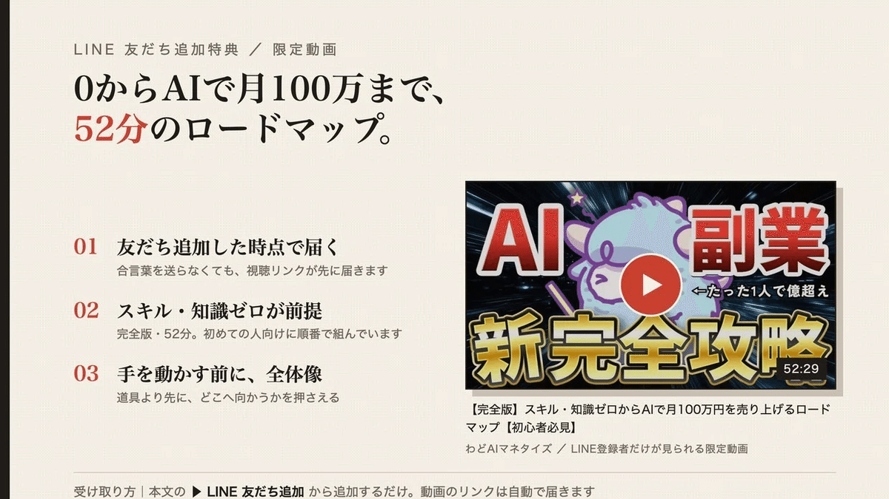
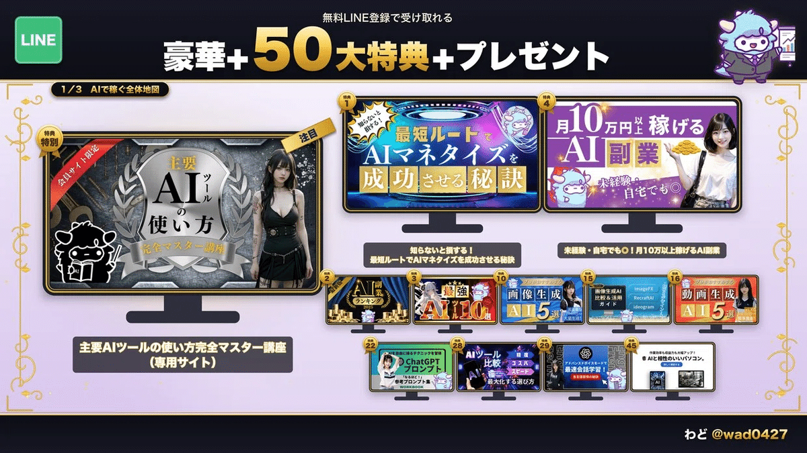
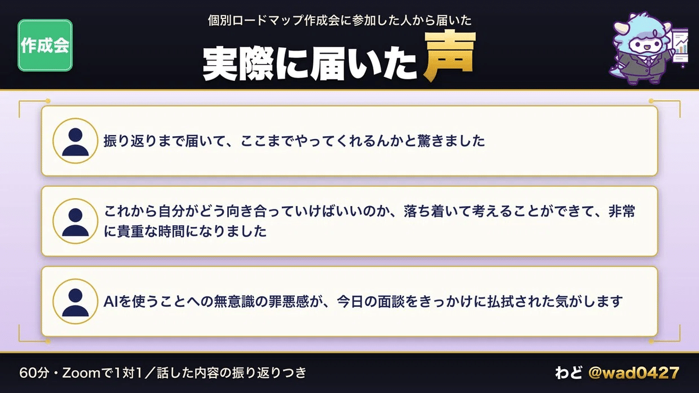

YouTube企画リサーチAI社員
YouTubeの企画出しと競合リサーチをする。貼られた反応データから「伸びている型」と企画10本・タイトル案を出す。
この特典の進め方
上から順に進めます。AIは下書きと候補を出します。どれを使うか、どこを直すかはあなたが決めます。
最初のゴール（今日やる1つ）
AI社員に1回話しかけて、自分のチャンネルの話で返事が返ってくる状態にする。
入れ方
上のボタンから zip をダウンロードします。中身は yt-dept-planning というフォルダ1つです。
- YouTube企画リサーチAI社員（
yt-dept-planning.zip）: YouTubeの企画出しと競合リサーチをする。貼られた反応データから「伸びている型」と企画10本・タイトル案を出す。
Claude Code を使っている場合
- ダウンロードした zip を、自分のパソコンの
~/.claude/skills/に展開します。ターミナルなら次の1行です
unzip ~/Downloads/yt-dept-planning.zip -d ~/.claude/skills/
- Claude Code を開き直して、
/yt-dept-planningと打って候補に出れば準備完了です
claude.ai（ブラウザ・アプリ）を使っている場合
- claude.ai の設定画面を開き、Skills の項目を探します
- ダウンロードした zip を、展開せずにそのままアップロードします
- 新しいチャットで話しかけます
Skills が使えるプランや画面の名前は変わることがあります。見つからないときは、Claude の公式ヘルプで「Skills」を検索してください。
1分の動作確認
「届けたい相手は『副業で動画を始めたい会社員』です。企画を10本出して」のように話しかけます。足りない情報があれば、AI社員の方から質問が返ってきます。質問が返ってくれば動いています。
zip の中身
AI社員1人は、判断の基準・型・手順・完成見本でできています。このAI社員の中身は次のとおりです。
| 中身 | ファイル | 何が入っているか |
|---|---|---|
| ワークフロー | SKILL.md |
いつ使うか・手順・各手順の判断基準・出力の型・してはいけないこと |
| 正しいアウトプット（完成見本） | references/good-output.md |
実際の企画出しを一般化した完成見本（チャンネル名・数値は伏せてある） |
| ナレッジ（考え方・判断の基準） | references/knowledge.md |
迷ったときに立ち返る考え方と、優先順位 |
| リファレンス | references/competitor-list-template.md |
競合リスト（空の雛形） |
| リファレンス | references/planning-criteria.md |
企画の判断基準 |
出力の形は「正しいアウトプット」（完成見本）にそろえて出てきます。見本と並べて、どこを直すかを決めてください。
このあと届くAI社員
企画リサーチAI社員は、YouTube部署の1人目です。次の場面で、AI社員が1人ずつ増えます。
- セミナー用オープンチャットに参加: YouTube分析AI社員
- セミナーに参加: YouTube台本AI社員・YouTubeサムネAI社員・YouTube編集AI社員（セミナーの実演で使う3人）
- 個別ロードマップ作成会に参加: YouTubeチャンネル設計AI社員
- わどAIスクールに入会: YouTubeアフィリエイトAI社員を加えた7人を、あなたのチャンネル用に設定して渡します
企画の次は台本、台本の次はサムネと編集。工程ごとに担当を分けておくと、毎回ゼロから説明し直さずに済みます。
もう1つの特典: いまの段階を10問で確かめる
LINE登録特典には「YouTube 0→100ロードマップ 現在地診断」も入っています。10問に「はい・いいえ」で答えると、いまの段階と次にやる1つが分かります。
最新AIが出たときの使い方
AI社員の指示文は、特定のモデルに合わせて書いていません。新しいモデルが出ても、手順はそのままで使えます。モデルの名前・料金・使える範囲は変わるので、使う前に各社の公式サイトで確かめてください。モデルの差より、どの1本のどこを直すかで結果が変わります。
AIに任せる所／自分で決める所
- AIに任せる所: 候補を出す・下書きを作る・抜けを見つける
- 自分で決める所: 誰に届けるか、どの案を使うか、数字や実績として何を出すか
AIは数字や実績を作りません。出したい実績は、自分で出典を確かめてから渡してください。
※成果には個人差があります。特典の内容は予告なく変わることがあります。
AI社員に仕事を渡せるようになると、手元に時間が残ります。次に考えるのは、その時間で何を作って、どう収益にするかです。
そうなった時に、わどAIスクールを思い出してもらえたらうれしいです。
下のLINEに友だち追加すると、0からAIで月100万までのロードマップを52分にまとめた限定動画が届きます。合言葉を送る必要はありません。AIツールを触った先で、どう収益へつなぐかの全体像を先に押さえたい人はこちらから。
▶ LINE 友だち追加 https://bit.ly/46ioegH

個別ロードマップ作成会に来てくれた人限定で、豪華50大特典を渡しています。
0から100までのロードマップ説明動画、AIツールの使い方をまとめた無料の会員サイト、AIの実例やマネタイズの方法まで詰め込んだ50個のコンテンツが全部もらえます。AIツールをビジネスに使うための素材が揃っています。

個別ロードマップ作成会でできること：
60分、Zoomで1対1。話すのは参加者ひとりのことだけです。
- これまでの経験・失敗・いまの強みを、直接聞いて棚卸し
- 「本当はこうなりたい」から逆算して、現在地から収益までの一本道をその場でロードマップに
- コンテンツ販売か、AIを使った運用代行か。商品がなくても進める方向性まで一緒に決める
- 話した内容はまとめて、振り返りとして後から送る

▶ LINE 友だち追加 https://bit.ly/46ioegH
羊軍団で待ってますね🐑